Trigonométrie
1 Angles orientés de vecteurs
1.1 Cercle trigonométrique, mesures d’arcs orientés
On appelle cercle trigonométrique un cercle de centre O de rayon 1, orienté dans le sens direct.
Par convention, le sens direct (noté +), est le sens inverse de celui des aiguilles d’une montre.
1.1.0.1 Enroulement de la droite des réels:
Dans le plan muni d’un repère orthonormal (O,A,B), on considère le cercle trigonométrique C.
Soit P le point tel que \overrightarrow{AP}=\overrightarrow{OB} et soit d la droite orientée, perpendiculaire à l’axe des abscisses, qui passe par A, munie du repère (A,P).
En enroulant cette droite d autour du cercle C, on obtient une correspondance entre un point N de la droite et un point M du cercle.
Soit C le cercle trigonométrique et M un point de ce cercle.
La mesure en radian de l’angle \widehat{AOM} est la longueur de l’arc \overset{\frown}{AM} intercepté par cet angle.
Le symbole associé à cette mesure est rad.
Sur le schéma ci-contre, le point N de coordonnée 3 sur la droite d, se retrouve après enroulement de d sur C en M tel que la longueur de l’arc \overset{\frown}{AM} est égale à AN
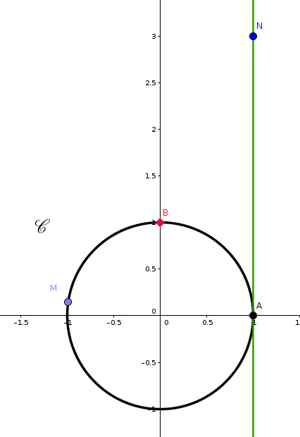
Comme le cercle trigonométrique est de rayon 1, son périmètre est de longueur 2\pi.
Le point de d de coordonnée 2\pi se retrouve ainsi en A.
Cela correspond à un tour complet, soit un angle de 360°.
Par proportionnalité entre angle et arc intercepté, on obtient les correspondances suivantes:
| Coordonnées de N sur d | |||||
|---|---|---|---|---|---|
| Mesure de l’angle \widehat{AOM} |
| Coordonnées de N sur d | -\dfrac{\pi}{2} | 0 | \dfrac{\pi}{2} | \pi | 2\pi |
|---|---|---|---|---|---|
| Mesure de l’angle \widehat{AOM} | -90^{\circ} | 0^{\circ} | 90^{\circ} | 180^{\circ} | 360^{\circ} |
Plusieurs points de la droite d correspondent à un même point du cercle C car la droite peut s’enrouler plusieurs fois.
Par exemple:
Les points de d de coordonnée \dfrac{\pi}{3} et \dfrac{7\pi}{3} correspondent tous les deux à un même point sur C.
Les points de d de coordonnée -\dfrac{\pi}{2} et \dfrac{3\pi}{2} correspondent tous les deux à un même point sur C.
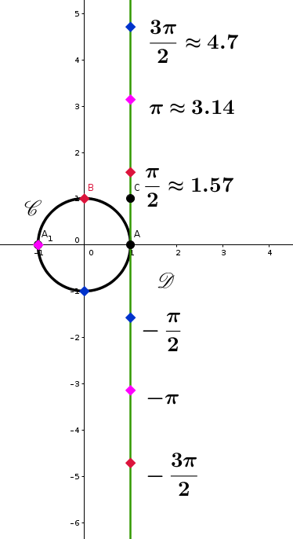
Soient A et M deux points du cercle trigonométrique.
Si l est une mesure de l’arc orienté \overset{\frown}{AM}, alors toutes les mesures de cet arc sont de la forme l+2k \pi, où k\in \mathbb{Z}.
On note alors \overset{\frown}{AM}=l+2k\pi (k\in \mathbb{Z}) ou \overset{\frown}{AM}=l[2 \pi].
La deuxième notation se lit “l modulo 2\pi”.
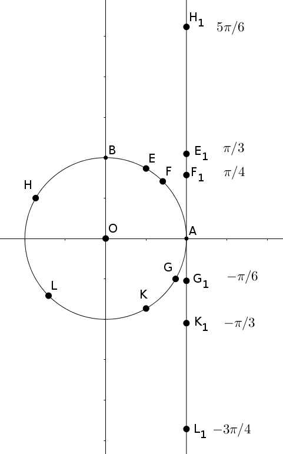
\overset{\frown}{AE}=\dfrac{\pi}{3}[2\pi];
\overset{\frown}{AF}=\dfrac{\pi}{4}[2\pi];
\overset{\frown}{AG}=-\dfrac{\pi}{6}[2\pi];
\overset{\frown}{AH}=\dfrac{5\pi}{6}[2\pi];
\overset{\frown}{AK}=-\dfrac{\pi}{3}[2\pi];
\overset{\frown}{AL}=-\dfrac{3\pi}{4}[2\pi];
1.2 Angles orientés de vecteurs
Soient \overrightarrow{u} et \overrightarrow{v} deux vecteurs unitaires (||\overrightarrow{u}||=||\overrightarrow{v}||=1).
Il existe deux points M et N du cercle trigonométrique tels que \overrightarrow{OM}=\overrightarrow{u} et \overrightarrow{ON}=\overrightarrow{v}.
On appelle mesure de l’angle orienté de vecteurs (\overrightarrow{u};\overrightarrow{v}) toute mesure de l’arc orienté \overset{\frown}{MN}.
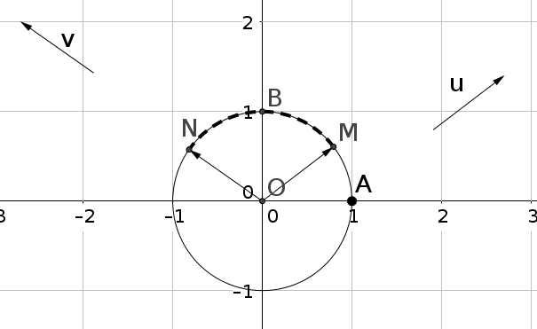
Soient \overrightarrow{u} et \overrightarrow{v} deux vecteurs non nuls. On note C le cercle trigonométrique de centre O.
On pose \overrightarrow{u}=\overrightarrow{OM} et \overrightarrow{v}=\overrightarrow{ON}.
Les demi-droites [OM) et [ON) coupent respectivement le cercle trigonométrique C en A et B.
Les vecteurs \overrightarrow{OA} et \overrightarrow{OB} sont unitaires et respectivement de même direction et de même sens que \overrightarrow{u} et \overrightarrow{v}.
On appelle alors mesure de l’angle orienté (\overrightarrow{u},\overrightarrow{v}), toute mesure de l’angle orienté (\overrightarrow{OA},\overrightarrow{OB}).
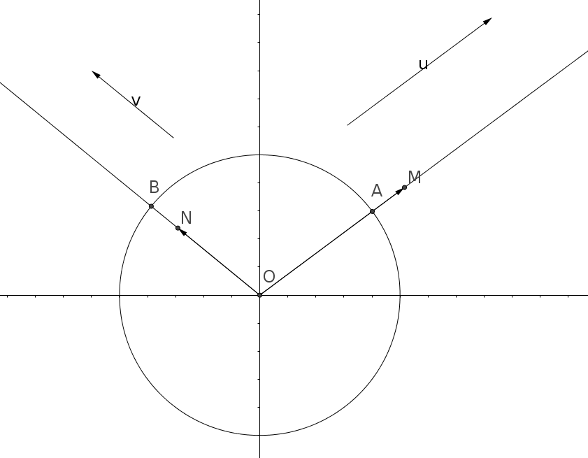
Une seule mesure de l’angle orienté (\overrightarrow{u},\overrightarrow{v}) appartient à l’intervalle ]-\pi;\pi]. Cette mesure est appelée mesure principale de l’angle (\overrightarrow{u},\overrightarrow{v}).
Trouver la mesure principale de l’angle \dfrac{17\pi}{3}
Deux méthodes pour déterminer la mesure principale d’un angle:
On sait que la mesure principale est de la forme \dfrac{17\pi}{3} +2k\pi et qu’elle doit être dans l’intervalle ]-\pi;\pi]. On a donc:
\begin{aligned}
-\pi &< \dfrac{17\pi}{3} +2k\pi \leqslant\pi \\
-1 &< \dfrac{17}{3}+2k \leqslant 1 \\
-1-\dfrac{17}{3} &< 2k \leqslant 1-\dfrac{17}{3} \\
-\dfrac{20}{3} &< 2k \leqslant-\dfrac{14}{3} \\
-\dfrac{10}{3} &< k \leqslant-\dfrac{7}{3}
\end{aligned} Or on sait que k\in \mathbb{Z} et que -\dfrac{10}{3} \approx -3{,}3 et -\dfrac{7}{3} \approx -2{,}3 donc nécessairement k=-3.
La mesure principale de l’angle est donc \dfrac{17\pi}{3}+2\times (-3)\pi=\dfrac{17\pi}{3} -6 \pi=\dfrac{17\pi - 18 \pi}{3}=-\dfrac{\pi}{3}
On décompose \dfrac{17\pi}{3} afin de faire apparaître le nombre de tours « en trop »:
\begin{aligned} \dfrac{17\pi}{3}&=\dfrac{(3\times 6 -1)\pi}{3} \\ &=\dfrac{3\times 6}{3} \pi -\dfrac{1}{3}\pi \\ &= 6\pi - \dfrac{1}{3} \pi \\ &= 3\times 2\pi - \dfrac{\pi}{3} \end{aligned} Ainsi \dfrac{17\pi}{3}=-\dfrac{\pi}{3} [2\pi].
2 Trigonométrie
2.1 Cosinus et sinus
On dit qu’un repère (O;\overrightarrow{i},\overrightarrow{j}) du plan orienté est orthonormal direct si:
||\overrightarrow{i}||=||\overrightarrow{j}||=1 et (\overrightarrow{i},\overrightarrow{j})=+\dfrac{\pi}{2}[2\pi]
Soient C le cercle trigonométrique de centre O et A et B deux points du cercle C tels que le repère (O;\overrightarrow{OA},\overrightarrow{OB}) soit orthonormal direct.
Soit x un réel.
Il existe un unique point M du cercle trigonométrique C tel que (\overrightarrow{OA};\overrightarrow{OM})=x[2\pi].
On appelle cosinus et sinus de x (notés \cos(x) et \sin(x)) les coordonnées du point M dans le repère (O;\overrightarrow{OA},\overrightarrow{OB}).
\cos(x): abscisse du point M.
\sin(x): ordonnée du point M.
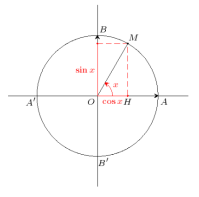
2.2 Résultats à retenir
Pour tout x\in \mathbb{R} et pour tout k\in\mathbb{Z}:
\cos(x+2k\pi)=\cos(x)
\sin(x+2k\pi)=\sin(x)
\cos^2(x)+\sin^2(x)=1
-1 \leqslant\cos(x) \leqslant 1
-1 \leqslant\sin(x) \leqslant 1
On rappelle que si \cos(x)\neq0, alors \tan(x)=\dfrac{\sin(x)}{\cos(x)}
Quelques valeurs de cosinus, sinus et tangente sont à retenir:
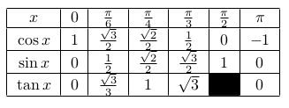
Pour retenir tous les résultats de ce tableau, on peut s’aider du cercle trigonométrique :
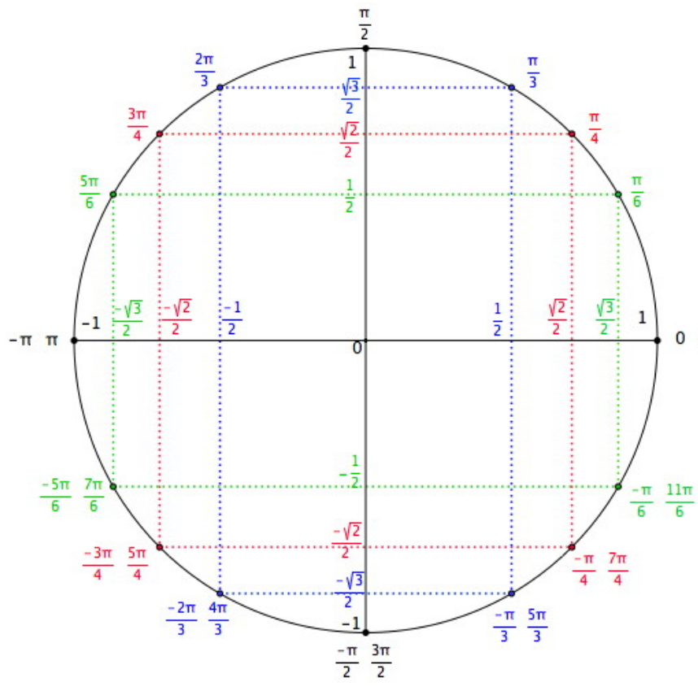
Calculer \sin(\alpha) et \cos(\beta) sachant que:
\cos(\alpha)=0{,}6 et -\frac{\pi}{2}<\alpha<0
\sin(\beta)=0{,}8 et \frac{\pi}{2}<\beta<\pi
\begin{aligned} \cos^2(\alpha)+\sin^2(\alpha)=1 \\ 0{,}6^2+\sin^2(\alpha)=1 \\ \sin^2(\alpha)=1-0{,}6^2\\ \sin^2(\alpha)=0{,}64 \\ \sin(\alpha)=-0{,}8 \text{ car } \sin(\alpha)<0 \text{ sur } \left]-\tfrac{\pi}{2};0\right[ \end{aligned}
\begin{aligned} \cos^2(\beta)+\sin^2(\beta)=1 \\ \cos^2(\beta)+0{,}8^2=1 \\ \cos^2(\beta)=1-0{,}64\\ \cos^2(\beta)=0{,}36 \\ \cos(\beta)=-0{,}6 \text{ car } \cos(\beta)<0 \text{ sur } \left]\tfrac{\pi}{2};\pi\right[ \end{aligned}
2.3 Angles associés
Dans toute cette partie, x désigne un réel et M le point associé au réel x sur le cercle trigonométrique.
2.3.1 Cosinus et sinus de -x
\cos(-x)=\cos(x)
\sin(-x)=-\sin(x)
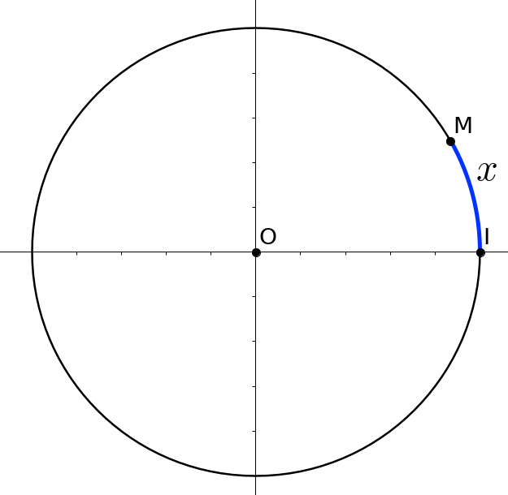
2.3.2 Cosinus et sinus de \pi-x
\cos(\pi-x)=-\cos(x)
\sin(\pi-x)=\sin(x)
2.3.3 Cosinus et sinus de \pi+x
\cos(\pi+x)=-\cos(x)
\sin(\pi+x)=-\sin(x)
2.3.4 Cosinus et sinus de \dfrac{\pi}{2}-x
\cos \left(\dfrac{\pi}{2}-x\right)=\sin(x)
\sin \left(\dfrac{\pi}{2}-x\right)=\cos(x)
2.3.5 Cosinus et sinus de \dfrac{\pi}{2}+x
\cos\left(\dfrac{\pi}{2}+x\right)=-\sin(x)
\sin\left(\dfrac{\pi}{2}+x\right)=\cos(x)
2.3.6 Exemples
\cos\left(\dfrac{2\pi}{3} \right)=\cos\left(\pi-\dfrac{\pi}{3} \right)=-\cos\left(\dfrac{\pi}{3} \right)=-\dfrac{1}{2}
\cos\left(\dfrac{7\pi}{6} \right)=\cos\left(\pi+\dfrac{\pi}{6} \right)=-\cos\left(\dfrac{\pi}{6} \right)=-\dfrac{\sqrt{3}}{2}
\sin \left( -\dfrac{\pi}{4} \right)=-\sin \left( \dfrac{\pi}{4} \right) = -\dfrac{\sqrt{2}}{2}
2.4 Formules d’addition et de duplication des cosinus et sinus
Soient a et b des réels.
\cos (a-b) = \cos(a) \cos(b) + \sin(a) \sin(b)
\cos (a+b) = \cos(a) \cos(b) - \sin(a) \sin(b)
\sin (a+b) = \sin(a) \cos(b) + \sin(b) \cos(a)
\sin (a-b) = \sin(a) \cos(b) - \sin(b) \cos(a)
Pour tout réel x,
\cos(2x)=\cos^2(x) - \sin^2(x)=2\cos^2(x)-1
\sin(2x)=2\sin(x)\cos(x)
Déterminer la valeur exacte de A=\cos \left(\dfrac{13\pi}{2}\right) + \sin \left(\dfrac{19\pi}{3}\right)
2.5 Résolution d’équations trigonométriques
Soient a et b des réels.
\cos (a) = \cos (b) \Longleftrightarrow \left\lbrace \begin{array}{l} b= a + 2k\pi, \quad k \in \mathbb{Z}\\ \qquad \text{ou} \\ b = -a + 2k\pi, \quad k \in \mathbb{Z} \end{array} \right.
\sin (a) = \sin (b) \Longleftrightarrow \left\lbrace \begin{array}{l} b= a + 2k\pi, \quad k \in \mathbb{Z}\\ \qquad \text{ou} \\ b = \pi-a + 2k\pi, \quad k \in \mathbb{Z} \end{array} \right.
Résoudre dans \mathbb{R} l’équation \cos(2x)=\cos\left(x-\dfrac{\pi}{3}\right).
\begin{aligned} \cos(2x)=\cos\left(x-\dfrac{\pi}{3}\right) &\Leftrightarrow 2x=x-\dfrac{\pi}{3}+2k\pi (k \in \mathbb{Z}) \text{ ou } 2x=-\left(x-\dfrac{\pi}{3}\right)+2k\pi (k \in \mathbb{Z}) \\ &\Leftrightarrow x=-\dfrac{\pi}{3}+2k\pi (k\in \mathbb{Z}) \text{ ou } 3x = \dfrac{\pi}{3}+2k\pi (k \in \mathbb{Z}) \\ &\Leftrightarrow x=-\dfrac{\pi}{3}+2k\pi (k\in \mathbb{Z}) \text{ ou } x= \dfrac{\pi}{9}+\dfrac{2k\pi}{3} (k \in \mathbb{Z}) \end{aligned} S=\left\{ -\dfrac{\pi}{3}+2k\pi ; \dfrac{\pi}{9}+\dfrac{2k\pi}{3} | k \in \mathbb{Z}\right\}
Résoudre dans \mathbb{R} l’équation \sin(3x)=\sin\left(2x-\dfrac{\pi}{4} \right).
\begin{aligned} \sin(3x)=\sin\left(2x-\dfrac{\pi}{4} \right) &\Leftrightarrow 3x=2x-\dfrac{\pi}{4}+2k\pi (k\in \mathbb{Z}) \text{ ou } 3x=\pi-\left(2x-\dfrac{\pi}{4}\right)+2k\pi (k \in \mathbb{Z}) \\ &\Leftrightarrow x=-\dfrac{\pi}{4} +2k\pi (k\in \mathbb{Z}) \text{ ou } 5x= \dfrac{5\pi}{4} +2k\pi (k\in \mathbb{Z}) \\ &\Leftrightarrow x=-\dfrac{\pi}{4} +2k\pi (k\in \mathbb{Z}) \text{ ou } x=\dfrac{\pi}{4}+\dfrac{2k\pi}{5} (k \in \mathbb{Z}) \end{aligned} S= \left\{ -\dfrac{\pi}{4} +2k\pi ; \dfrac{\pi}{4}+\dfrac{2k\pi}{5} | k \in \mathbb{Z}\right\}
3 Fonctions trigonométriques
3.1 Parité et périodicité d’une fonction
Soit f une fonction définie sur un intervalle I de \mathbb{R} et \mathcal{C} sa courbe représentative dans un repère orthogonal (O,I,J) du plan.
La fonction f est:
paire si pour tout x de I, -x appartient à I et f(-x)=f(x).
Sa courbe représentative \mathcal{C} est alors symétrique par rapport à l’axe des ordonnées.impaire si pour tout x de I, -x appartient à I et f(-x)= - f(x).
Sa courbe représentative \mathcal{C} est alors symétrique par rapport à l’origine O du repère.périodique de période T (T réel non nul), si pour tout x de I, x+T et x-T appartiennent à I et f(x+T)=f(x).
Sa courbe représentative \mathcal{C} est alors invariante par translation de vecteur T\overrightarrow{i} ou - T\overrightarrow{i}.
On a représenté ci-dessous, dans un repère orthogonal, la fonction f définie sur \mathbb{R} par f(x)= \sin ^{2}(x) + \cos (2x)
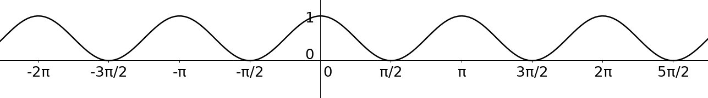
Conjecturer graphiquement la parité de f et une période de f.
Démontrer ces conjectures par le calcul.
Soit f la fonction définie sur \mathbb{R} par f(x)=\cos (4x)-\sin ^{2}(x).
Étudier la parité de f. Interpréter graphiquement le résultat.
Conjecturer graphiquement la période de f et démontrer cette conjecture par le calcul.
3.2 La fonction sinus
La fonction sinus, notée \sin, est la fonction définie sur \mathbb{R} par x \mapsto \sin (x).
La fonction sinus est impaire. En effet, pour tout réel x, \sin (-x) =-\sin (x).
La courbe représentative de la fonction sinus est une sinusoïde. Elle est symétrique par rapport à l’origine du repère.
La fonction sinus est bornée. En effet, pour tout réel x, -1 \le \sin (x) \le 1.
La fonction sinus est 2\pi-périodique. En effet, pour tout réel x, \sin (x + 2\pi) = \sin (x).
Sa courbe représentative est donc invariante par translation de vecteur 2\pi \overrightarrow{i} ou -2\pi \overrightarrow{i}
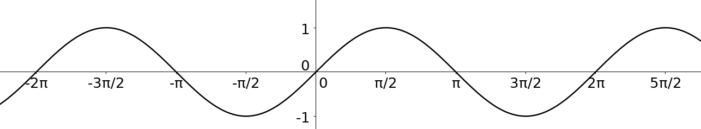
3.2.0.1 Étude des variations de la fonction sinus:
La fonction sinus est 2\pi-périodique. On peut donc restreindre l’étude à un intervalle de \mathbb{R} d’amplitude 2\pi. On en déduit ensuite les variations sur \mathbb{R}.
De plus la fonction sinus est impaire. On peut donc restreindre l’étude à l’intervalle [0;\pi] d’amplitude \pi.
On déduit ensuite les variations sur [-\pi;\pi] par symétrie.
On étudie donc la fonction sinus sur [0;\pi]: On peut conjecturer à l’aide de la courbe représentative de la fonction sinus que celle-ci est croissante sur \left[0;\dfrac{\pi}{2}\right] et décroissante sur \left[\dfrac{\pi}{2};\pi\right]
Soient x et x_1 deux réels de \left[0;\dfrac{\pi}{2}\right] tels que x<x_1. On appelle M et M_1 les points du cercle trigonométrique respectivement associés à ces réels. Ces points sont sur le quart de cercle en haut à droite:
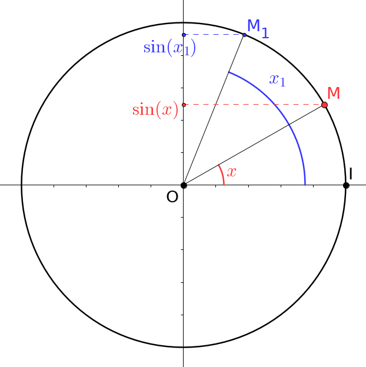
On remarque ainsi que le point M_1 est “plus haut” que le point M. L’ordonnée de ce premier est donc supérieure à celle de ce dernier. Autrement dit, \sin(x_1) > \sin(x). Ainsi la fonction sinus est croissante sur \left[0;\dfrac{\pi}{2}\right]
Soient x et x_1 deux réels de \left[\dfrac{\pi}{2};\pi\right] tels que x<x_1. On appelle M et M_1 les points du cercle trigonométrique respectivement associés à ces réels. Ces points sont sur le quart de cercle en haut à gauche :
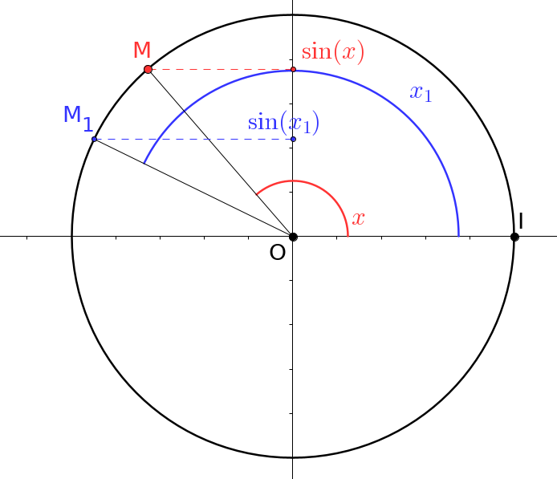
On remarque ainsi que le point M_1 est “plus bas” que le point M. L’ordonnée de ce premier est donc inférieure à celle de ce dernier. Autrement dit, \sin(x_1) < \sin(x). Ainsi la fonction sinus est décroissante sur \left[\dfrac{\pi}{2};\pi\right].
3.3 La fonction cosinus
La fonction cosinus, notée \cos, est la fonction définie sur \mathbb{R} par x \mapsto \cos (x).
La fonction cosinus est paire. En effet, pour tout réel x, \cos (-x) =\cos (x).
La courbe représentative de la fonction cosinus est une sinusoïde. Elle est symétrique par rapport à l’axe des ordonnées.
La fonction cosinus est bornée. En effet, pour tout réel x, -1 \le \cos (x) \le 1.
La fonction cosinus est 2\pi-périodique. En effet, pour tout réel x, \cos (x + 2\pi) = \cos (x).
Sa courbe représentative est donc invariante par translation de vecteur 2\pi \overrightarrow{i} ou -2\pi \overrightarrow{i}.
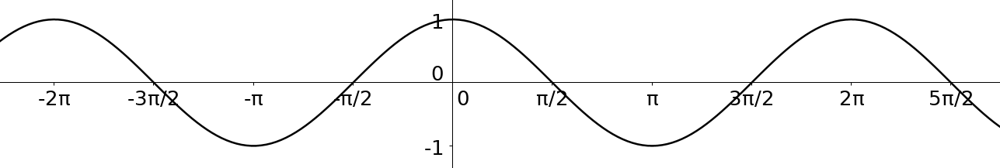
3.3.0.1 Étude des variations de la fonction cosinus:
La fonction cosinus est 2\pi-périodique. On peut donc restreindre l’étude à un intervalle de \mathbb{R} d’amplitude 2\pi. On en déduit ensuite les variations sur \mathbb{R}
De plus la fonction cosinus est paire. On peut donc restreindre l’étude à l’intervalle [0;\pi] d’amplitude \pi.
On déduit ensuite les variations sur [-\pi;\pi] par symétrie.
On étudie donc la fonction cosinus sur [0;\pi]: On peut conjecturer à l’aide de la courbe représentative de la fonction cosinus que celle-ci est décroissante sur l’intervalle [0;\pi].
Soient x et x_1 deux réels de [0;\pi] tels que x<x_1. On appelle M et M_1 les points du cercle trigonométrique associés à ces deux réels. Trois cas sont possibles:
x et x_1 font partie de \left[0;\dfrac{\pi}{2}\right]
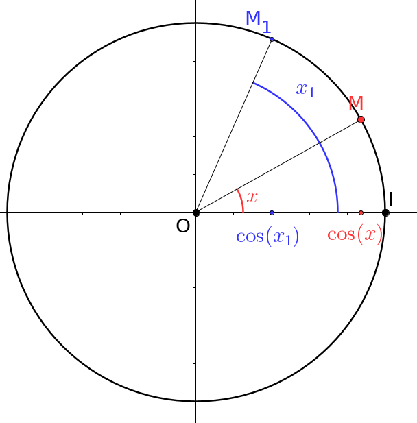
x fait partie de \left[0;\dfrac{\pi}{2}\right] et x_1 de \left[\dfrac{\pi}{2};\pi \right]
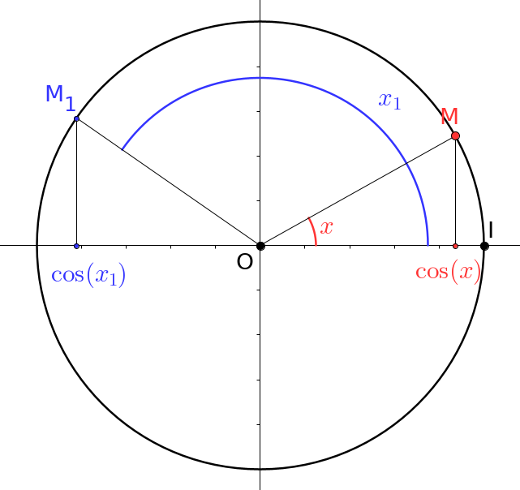
x et x_1 font partie de \left[\dfrac{\pi}{2};\pi \right]
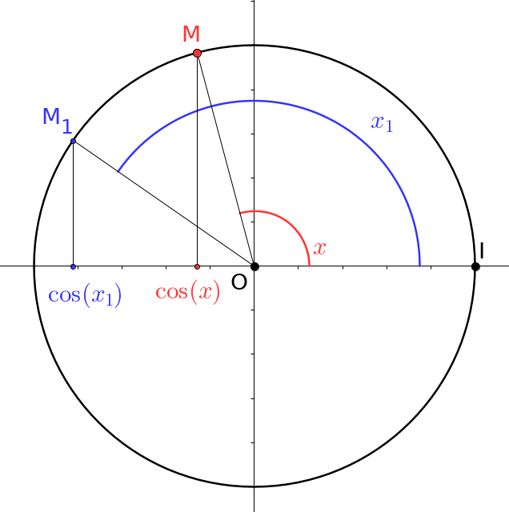
Dans tous les cas, on remarque que l’abscisse du point M est supérieure à celle de M_1. Autrement dit, \cos(x)>\cos(x_1).
En résumé, sur [0;\pi], la fonction cosinus est décroissante.